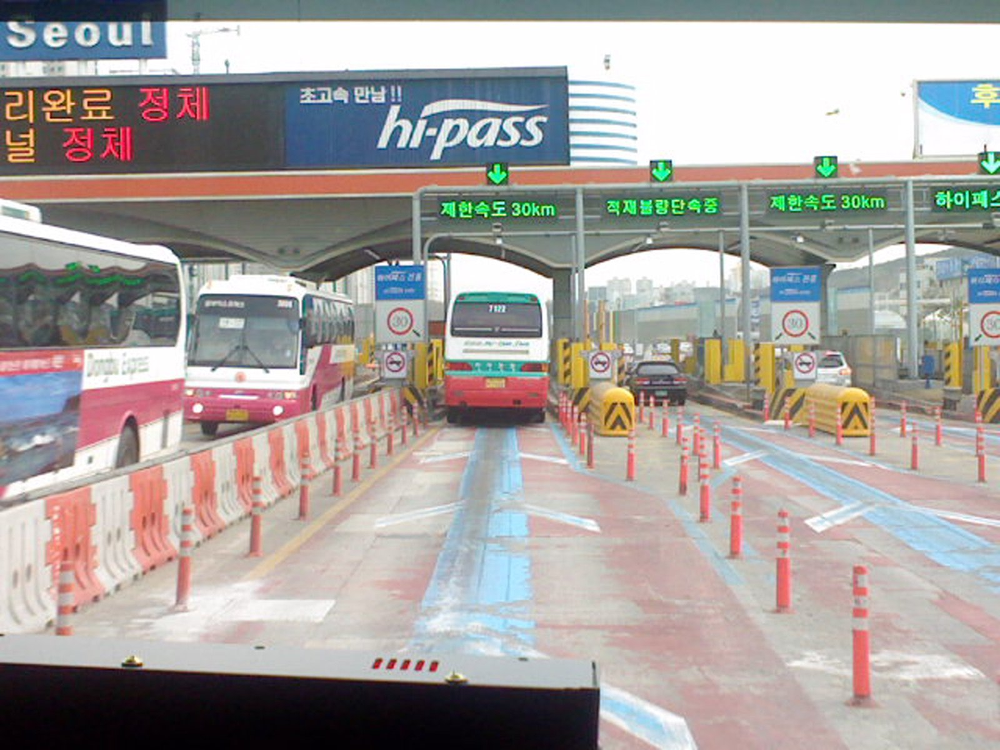

▲ 하이패스로 통과하는 고속도로 요금소. 다자녀가구·장애인·유공자 통행료 감면이 확대된다 ⓒ P.Cps1120a, Wikimedia Commons (CC BY-SA 3.0)
"엄마, 넷이라서 할인해준대." 앞으로 자녀가 많은 가정이라면 고속도로를 이용할 때 이런 대화가 낯설지 않아질 전망입니다. 국토교통부가 지난 21일 국무회의에서 장애인·국가유공자의 임차·대여 차량과 다자녀가구에 대한 고속도로 통행료 감면을 확대하는 내용의 '유료도로법 시행령 개정안'을 의결했습니다.
이번 개정안의 핵심은 두 갈래입니다. 그동안 소유 차량에만 적용되던 장애인·유공자 감면 혜택을 임차·대여 차량까지 넓힌 것과, 그동안 감면 대상이 아니었던 다자녀가구에 새롭게 통행료 할인을 도입한 것입니다.
1. 무엇이 바뀌나 — 유료도로법 시행령 개정안
국토교통부는 21일 국무회의에서 유료도로법 시행령 개정안을 의결했습니다. 지금까지 장애인·국가유공자 통행료 감면은 본인 또는 동일 세대원이 소유한 비영업용 차량에만 적용됐습니다. 개정안 시행 이후에는 1년 이상 임차하거나 대여한 차량도 감면 대상에 새로 포함됩니다. 차를 직접 소유하지 않고 장기렌트나 리스로 이용하는 장애인·유공자도 동일한 혜택을 받을 수 있게 된 셈입니다.
여기에 그동안 별도 감면이 없었던 다자녀가구를 위한 통행료 할인 제도도 새로 도입됐습니다. 두 정책 모두 차량을 이용하는 방식이 다양해지고 가족 구성이 변화하는 흐름을 반영한 조치로 풀이됩니다.
2. 다자녀가구 통행료 할인 — 자녀 2명 10%, 3명 이상 20%
다자녀가구 할인은 주말과 공휴일, 한국도로공사가 운영하는 고속도로를 이용할 때 적용됩니다. 미성년 자녀가 2명이면 통행료의 10%, 3명 이상이면 20%를 할인받습니다. 시행 기간은 2026년 7월 28일부터 2029년 8월 21일까지 3년간 한시적으로 운영됩니다.
다만 신청 시기는 자녀 수에 따라 다릅니다. 3자녀 이상 가구는 22일부터 바로 신청할 수 있지만, 2자녀 가구는 신청자가 몰릴 것에 대비한 서버 확장 작업을 거쳐 8월 22일부터 시행됩니다. 신청은 한국도로공사 통행료 누리집이나 앱, 영업소 방문을 통해 할 수 있습니다.
3. 장애인·유공자 임차·대여 차량 확대 — 최대 100% 감면

▲ 카니발처럼 다자녀가구가 즐겨 찾는 다인승 차량도 이번 통행료 할인 대상 기준에 포함된다
감면율은 대상에 따라 차등 적용됩니다. 독립유공자, 국가유공자(1~5급), 5·18민주화운동부상자(1~5급)는 통행료를 100% 감면받고, 장애인 및 기타 유공자는 50% 감면됩니다. 임차·대여 차량이 감면을 받으려면 일정한 차량 기준도 충족해야 합니다. 승용차는 배기량 2,000㏄ 이하 또는 6~10인승, 승합차는 12인승 이하, 화물자동차는 최대적재량 1톤 이하여야 합니다.
장애인은 주민등록 주소지 관할 행정복지센터에서, 유공자는 보훈지청에서 28일부터 신청할 수 있습니다. 신청 시 신분증과 자동차등록증, 시설대여계약서 또는 임대차계약서를 제출해야 합니다.
4. 신청 방법과 이용 시 유의사항
감면·할인 혜택을 받으려면 등록한 하이패스카드를 단말기에 꽂고 하이패스차로로 통행해야 합니다. 출구영업소에서는 다자녀가구 할인의 경우 부모의 탑승 여부를 확인하는 절차가 있으므로, 통행 시 등록된 보호자가 함께 타고 있어야 합니다.
신청 일정을 다시 정리하면, 장애인·유공자와 3자녀 이상 가구는 7월 22일과 28일부터 순차적으로 신청이 가능하고, 2자녀 가구는 8월 10일부터 신청할 수 있습니다. 대상에 해당한다면 신청 시작일에 맞춰 필요 서류를 미리 준비해두는 것이 좋습니다.